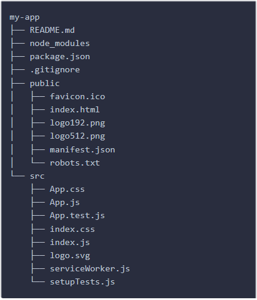

Learning Goals
At the end of this Tutorial, you will be able to:
- Create and call arrow functions.
- Use arguments and parameters to pass values to an arrow function.
- Write short-hand single-statement arrow functions with implicit returns.
In your new react/exercises folder, create a new sub-folder named 2.
Save the file below to this new react/exercises/2 sub-folder and unzip it.
📄 2.zip
About Create React App (CRA)
The fastest way to get started with ReactJS is to:
is a global command-line utility that you use to create new projects.
- Import the ReactJS libraries and Babel transpiler from a CDN.
- View your ReactJS-powered web pages with the VSCode Live Server extension.
Building your first app with CRA
The fastest way to get started with ReactJS is to:
It sets up your development environment so that you can use the latest JavaScript features, provides a nice developer experience, and optimizes your app for production. will set up everything you need to run a React application.
- Open a terminal window and navigate to where you want React to create a folder for your app. For example:
C:\> users\JohnSmith
orC:\>
- Type following command that includes the name you want to call your new app.
C:\> npx create-react-app hello-react
Over a few minutes React will respond as shown below.

React will create the following hierarchy of folders and files.
React folders and files
Your local index.js file is empty. Note that the link to this file has an attribute of type="text/babel".
The node_modules folder
This contains the dependencies needed by your app.
package.json and yarn.lock |
Your app's metadata for your app. They ensure your package is consistent across various machines by listing the versions of dependencies that installed with your package. |
.gitignore |
Specifies any files you do not want Git to track. |
README.md |
Use this file, written in markdown, to provide other developers with information about your app. |
The public folder
Your app's root folder that gets served up to the user.
index.html |
The template web page served when your app is run. It contains a <div id="root"></div> container that links to your React components. |
manifest.json |
Contains mostly metadata used to define your app. |
robots.txt |
Defines rules for search engine spiders, crawlers and scrapers accessing your app. |
Also in this folder are a few React icon and image files used by index.html file.
The src folder
This contains the components, tests, css files, and so on. Think of it as your react app folder. All of the code you write will be located here.
index.js |
This renders your component. It also registers any service workers. This is where you initialize the app and call ReactDOM.render |
App.js |
This file contains a very basic react component which you will by your own root component. |
index.css |
This contains styles for the general setup of your app. |
serviceWorker.js |
This pre-caches the script files of your react app to improve performance. |
setupTests.js |
This sets up tests and runs them. It is directly invoked when you run npm run test. |
This folder also contains a logo image file used by App.js by default.
Starting your app
After you have created you app, you launch it by running the following command from inside your app folder.
C:\hello-react> npm start
This starts the React local development server that serves your app at http://localhost:3000/.
About the package.json file
This is a JSON(JavaScript Object Notation) file that includes key information concerning your project. This is a required file that is needed to run any React project.
This file includes metadata such as name, author and version as well as starter scripts and dependencies used in the project.
Organizing your scr folder
The article covered the approach of designing a well organized and maintainable folder structure. React does not really tell you how to organize your project. Developers typically organise this folder into sub-folders. See the example below.

src/api.js |
You’ll probably need to make calls to a backend API at some point. Put all that code here. If it gets too unwieldy in one file, make a src/api directory and put the area-specific API files under there – like userApi.js, productApi.js. The api directory contains all services that take care of the communication between the React application (frontend) and an API (backend). |
src/components |
All your Presentational (aka Dumb) components go here. These are the simple stateless ones that just take props. If you're already familiar with React you should know that it's mainly component based. The components are actually the heart of every React application. The whole application, at least the presentational view, is built of many small components. Usually, I create a new file for each single component. Beside the components themselves, you can also add their stylesheets or tests to this directory. |
src/containers |
The Container components go here. These are the stateful ones, and the ones that make the API calls. If you’re using Redux, these are the ones that are connected to the store. Notice that CSS and tests are in the same folder as their respective components. |
src/images |
Put the images in one place to start with. |
src/pages |
The pages directory includes the react-router-dom paths accessed while navigating through the application. Here, we collect multiple components into a single larger one to display a complete page view. A page might contain its own component directory which includes "local" components that are only used on this page. For complex pages with a deep component tree you might want to check out the React Context API which makes it much easier to pass props along the tree and to handle a global "page state". |
src/utils |
You’ll probably end up with miscellaneous utility functions – error handlers, formatters, and the like. I usually put them in a file inside utils so I can access them easily. |
src/i18n |
i18n stands for internationalization and takes care of the language support of the application. The including JSON files are basically objects containg fixed constants as keys and their associated translations as values. Therefore, the keys should be equal for each language file. Only the values (translations) differ from each other. You can easily query those language files later on by writing your own custom hook or component. |
Exercise 5.1: Creating a basic app
Let's begin by rendering some HTML content in a web page without using components. You will use this as a basis for adding componnets in the next few exercises.
- In VS Code, open the index.html and index.js files. Display the index.html file with Live Server in your web browser.
- Into your index.html file, copy-and-paste the two div tags with IDs of header and main as shown below.
<div id="header"></div> <div id="main"></div>
- Into your index.js file, copy-and-paste the following two statements that will create variables.
const header = ReactDOM.createRoot(document.getElementById('header')) const main = ReactDOM.createRoot(document.getElementById('main')) - Next, enter these two render() statements.
header.render(<header><h1>Corporate strategy</h1></header>) main.render(<main><section><p>Leverage agile frameworks to provide a robust synopsis for high level overviews. Iterative approaches to corporate strategy foster collaborative thinking to further the overall value proposition.</p></section></main>)
- Save your two files and verify that the output displays correctly in your browser.
As in the previous Tutorial you are rendering elements from React to the web browser.
Exercise 2.2: Rendering HTML content with components
Let's update the code in Exercise 2.1 to use functional components.
- In your index.js file, add the following two render() statements. You will use each one to display a component in a div of your web page.
header.render( <HeaderContent /> ) main.render( <MainContent /> )
- Next, enter the following two JavaScript functions with the return keywords:
function HeaderContent () { return ( ) }function MainContent () { return ( ) }Note that each function name matches the name of a component.
- Update the first function code block with the element from the first React render() statement at the top of your index.js file.
function HeaderContent () { return ( <header><h1>Corporate strategy</h1></header> ) } - And update the second function code block with the element from the second React render() statement.
function MainContent () { return ( <main><section><p>Leverage agile frameworks to provide a robust synopsis for high level overviews. Iterative approaches to corporate strategy foster collaborative thinking to further the overall value proposition.</p></section></main> ) } - Delete or comment out the two original React render() statements from index.js and save the file.

- Save index.js and verify both components display correctly in your web browser.
Exercise 2.3: Tidying up the component code
Your code from the previous exercise uses two render() statements in React to update two div containers in the HTML file. Let's simplify this.
- In index.html, delete or comment out the two current div tags and enter a new one with an ID of root.

- In index.js, delete or comment out the header and main variables at the top of the file, and define a new root variable.

- Also, replace the two render() statements with one that outputs to the root container in the web page.

- Save your work and verify the components display correctly.
React components are compostible
In the web browser DOM, elements are nodes that are like but not fully objects.
<h1>Hello, world!</h1>
In React, however, elements are fully objects.
React will update the DOM nodes (of the web page) to match the React elements (of the React code).
Elements are the building blocks of React components.
<div id="root"></div> <div id="something"></div> <div id="anotherthing"></div>
Exercise 2.4: Nesting components
In the final exercise of this Tutorial, you will nest a new component inside an existing one. Here are the steps.
- In index.js, add a function that will return the content of a new component named ImgContent as follows.
function ImgContent () { return ( <figure><img src="https://lunevedy.netlify.app/ui/assets/img/1024x618-cafe.jpg" alt="sample image"/></figure> ) } - Update the function that returns the content of the MainContent component as shown bwlow
function MainContent () { return ( <div> <ImgContent /> <main><section><p>Leverage agile frameworks to provide a robust synopsis for high level overviews. Iterative approaches to corporate strategy foster collaborative thinking to further the overall value proposition.</p></section></main> </div> ) }Your new, updated components should now display correctly.